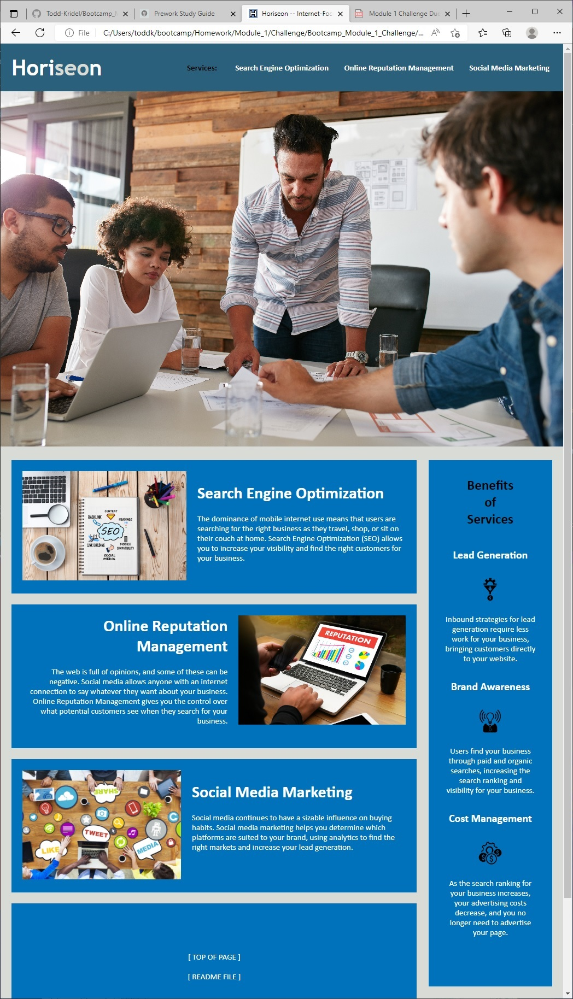
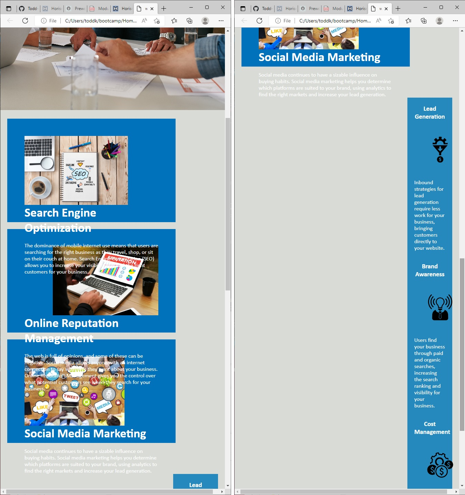

Code Refactoring of an Example Business Website That Can Benefit from Some Enhancements
This assignment -- which was for the Module 1 Challenge of the DU Coding Bootcamp -- was done for the purpose of furthering the starting introductory/basic HTML and CSS concepts and commands that are a good foundation to the full-stack (front-end and back-end) development of webpage systems. This assignment was an logical extension of the "Prework Study Guide" tool assignment that was done for an initiation for the 1st bootcamp class; Refer to below for additional information (and links) about the "Prework Study Guide" assignment.
This current Module 1 Challenge assignment provided a good mechanism for examining and analyzing and understanding the external-file Cascading Style Sheets (CSS) -- design appearance -- code of an provided starter example webpage...and also a good mechanism for viewing and learning about and processing the corresponding HTML components that are in the definition code file of the webpage. And then the learned knowledge allowed for the webpage system to be improved and expanded by organizing the code elements and adding code elements to improve and expand the functionality of the webpage system.
This assignment focussed on the concepts/objectives of "Accessibility" and "Responsiveness"...which is for adding efficiencies and enhancements that assist users who cannot access or see certain display/interactive features of the website; and adding efficiencies and enhancements that assist with the versatility of the display functions of a website (for different capabilities of different connecting devices (screens and printers)). The situation of users being not able to access or see display/interactive features of a website can occur during connection problems or when the user has a sight disability or hearing disability. The process of building upon and improving upon the existing code of an existing webpage is called "Refactoring"...which was another learning objective of this assignment.
The learning of the assignment is good information for creating webpage systems that are more-user-friendly and are more-efficient by being optimized for usage with many different display devices and print devices.
----
Note:
* The following URL link is for viewing the code files of the previous "Prework Study Guide" tool bootcamp assignment...which The study guide contains notes about HTML, CSS, Git, and JavaScript: "https://github.com/Todd-Kridel/prework-study-guide".
* The following URL link is for viewing the published webpage file of the "Prework Study Guide" bootcamp assignment: "https://todd-kridel.github.io/prework-study-guide".
----
The objectives -- user story and acceptance criteria items -- of the assignment were as follows:
[ User Story ]
AS A marketing agency
I WANT a codebase that follows accessibility standards
SO THAT our own site is optimized for search engines
[ Acceptance Criteria ]
GIVEN a webpage meets accessibility standards
WHEN I view the source code
* THEN I find semantic HTML elements
WHEN I view the structure of the HTML elements
* THEN I find that the elements follow a logical structure independent of styling and positioning
WHEN I view the image elements
* THEN I find accessible alt attributes
WHEN I view the heading attributes
* THEN they fall in sequential order
WHEN I view the title element
* THEN I find a concise, descriptive title
The webpage is a basic one that has a title header and a menu bar that links to sections of the page; with the sections initially/ideally being displayed in 2 columns that have various staggered elements of floating pictures and icons and that have various sections of surrounding text. Some pictures of the webpage are included at below.
--
Grading Requirements and Criteria' in addition to satisfying the items of user story and acceptance criteria that are listed at above:
--> Technical Acceptance Criteria: 40%
* The webpage links all function correctly.
* The webpage CSS selectors and properties are consolidated and organized to follow semantic structure.
* The webpage CSS file is properly commented.
--> Deployment: 32%
* The webpage is deployed at live GitHub URL and the URL is provided.
* The webpage loads with no errors.
* The webpage GitHub URL is submitted and functional; containing all of the involved repository application code files.
--> Application Quality: 15%
* Application resembles (at least 90%) screenshots provided in the Challenge assignment instructions.
--> Repository Quality: 13%
* The webpage repository has a unique name.
* The webpage repository follows best coding practices for file structure and naming conventions.
* The webpage repository follows best practices for class/id naming conventions, indentation, quality comments, etc.
* The webpage repository contains multiple descriptive commit messages.
* The webpage repository contains a quality README file that has description, screenshot, and link about/for the deployed webpage.
To use this sample business webpage that was refactored for purposes of organization and efficiency and also attention to accessibility features...
1. Click the menu/section links to test about their functionality;
2. Point to the pictures and graphic icons and the tab title of the webpage (and pause for a moment at each pointing) to view HTML alt/alternate text that describes the pictures/icons to users of the webpage during situations when the pictures/icons cannot be displayed;
3. Attempt to resize the browser window to change the display size of the webpage to test about the versatility of the layout content of the webpage where the layout should change to a different view that does not interfere with readability.
The following picture shows the appearance of the upgraded refactored webpage:

The following URL is for the GitHub Pages published public view of Todd Kridel's Coding Bootcamp Module 1 Challenge assignment webpage: "https://todd-kridel.github.io/Bootcamp_Module_1_Challenge/".
The following picture shows the appearance of the display problems that occurred when a user attempted to re-size to smaller size the starting-code version of the webpage that was refactored:

The starter code that was used for this code refactoring process challenge was created by GitHub member "Xandromus" and supplied in the public bootcamp-related repository that was/is named "urban-octo-telegram".
MIT License
Copyright (c) 2022 DU Full-Stack Web Development Coding Boot Camp
Permission is hereby granted, free of charge, to any person obtaining a copy of this software and associated documentation files (the "Software"), to deal in the Software without restriction, including without limitation the rights to use, copy, modify, merge, publish, distribute, sublicense, and/or sell copies of the Software, and to permit persons to whom the Software is furnished to do so, subject to the following conditions:
The above copyright notice and this permission notice shall be included in all copies or substantial portions of the Software.
THE SOFTWARE IS PROVIDED "AS IS", WITHOUT WARRANTY OF ANY KIND, EXPRESS OR IMPLIED, INCLUDING BUT NOT LIMITED TO THE WARRANTIES OF MERCHANTABILITY, FITNESS FOR A PARTICULAR PURPOSE AND NONINFRINGEMENT. IN NO EVENT SHALL THE AUTHORS OR COPYRIGHT HOLDERS BE LIABLE FOR ANY CLAIM, DAMAGES OR OTHER LIABILITY, WHETHER IN AN ACTION OF CONTRACT, TORT OR OTHERWISE, ARISING FROM, OUT OF OR IN CONNECTION WITH THE SOFTWARE OR THE USE OR OTHER DEALINGS IN THE SOFTWARE.